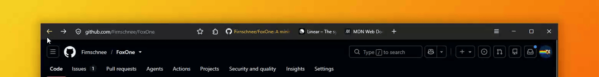
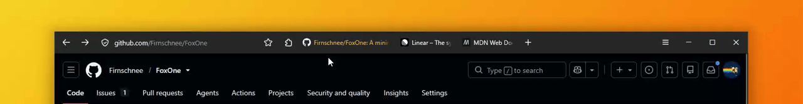
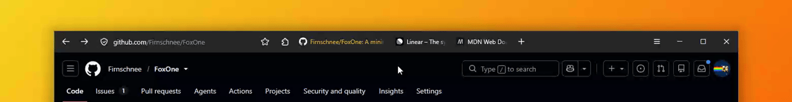

The three moving parts of FoxOne, recorded as they behave in daily use. All of it is CSS: there is no script running in the browser chrome.

fx-01«dynamic url bar»clean by default · icons reveal on hover or focus

fx-02«dynamic tabs»tabs and pinned addons revealed on hover · tucked by the hamburger

fx-03«floating find bar»adapted from littlefox